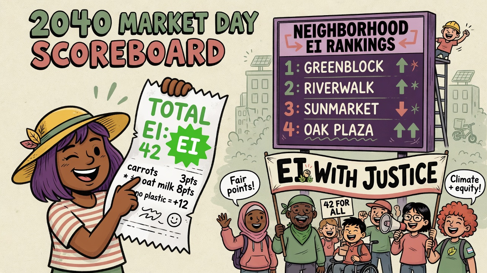

Paradigm Shift
When Environmental Impact intensity left the annual report — and rewrote how people shop, choose where to live, and fight for climate justice.
Your Grocery Receipt Now Shows an “EI Score.” For Some Families, It’s Pride — and Guilt.
When Maria Lopez, a nurse in Phoenix, scans her groceries, a number appears on her receipt: EI Intensity: 42 — lower than last month’s 51. She smiles.
Across the U.S. and dozens of countries, retailers now show a standardized Environmental Impact Intensity score — a simplified take on the corporate EI/Revenue metrics required since the mid-2030s. It folds carbon, water stress, and land use into each product, normalized for price.
Households treat it as a daily ritual: cereal comparisons, monthly “EI budgets,” even neighborhood leaderboards. But in lower-income areas the cheapest options often score worst — ultra-processed foods shipped far or grown under heavy irrigation.
“I want to do the right thing. But when the low-EI rice costs twice as much, what choice do I really have?”
Jamal Washington · Detroit · climate justice volunteer
Advocates say the index still loads too much onto shoppers. “We didn’t ask for a scorecard,” one organizer said. “We asked for systems that make the sustainable choice the affordable one.”
Once “Green Theater,” Provincial EI Rankings Now Shape Where People Live and Work
When the 2040 EI Progress & Decoupling Index dropped, few expected top North American spots to go to Nova Scotia and Minnesota’s Iron Range — places long tied to heavy industry.
Both climbed hard. The index tracks not only absolute cuts but how cleanly economies decouple growth from harm. Credit goes to offshore wind, mine remediation, and circular manufacturing clusters.
Rankings now move money and people. Employers cite scores when siting facilities; agents sell “Low-EI Living.” Remote workers follow high-ranking places for lifestyle and values. Regions that slip feel punished for industries that once kept the lights on.
The Global EI Justice Network wants a “historical responsibility” adjustment — credit for cleaning up pollution legacies, not only for cleaner baselines.
Proposal · several national legislatures · still controversial

Life with EI · 2040 market day · receipt & neighborhood rankings“This Index Was Supposed to Save Us. Now It’s Used Against Us.” Movements Demand a Justice-Centered EI Overhaul
In Manila, activists gather outside a development bank. Fifteen years after corporate, portfolio, and national EI indices went mainstream, a global movement argues the tools were captured — deepening inequality instead of solving the climate crisis.
Portfolio metrics push capital from the Global South toward already-wealthy, low-intensity assets. Rankings miss emissions embedded in exports to rich consumers. Companies cheer intensity gains while workers in coal, oil, and heavy industry lose jobs without real transition support.
“We were told these numbers would create accountability. Instead, they’re being used to justify trade barriers and deny financing to countries still building basic infrastructure.”
Aisha Rahman · Bangladesh · climate justice organizer
More than 200 organizations have launched the People’s EI Charter. Some governments blend environmental data with equity metrics. Whether those experiments win — or today’s indices stay dominant — is a defining fight of the 2040s.
- Historical emissions & consumption-based accounting in national indices
- Stronger protections for workers and communities in transition
- Indigenous and frontline groups help define how “impact” is measured